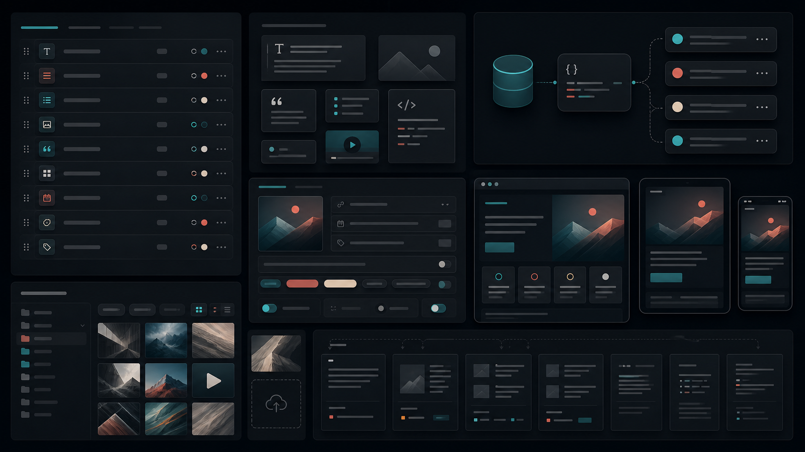

まず記事を構成するフィールドを分解する
タイトル、リード文、カテゴリ、タグ、公開日、読了時間、アイキャッチ、本文、関連記事。静的HTMLではひとつのページに見えても、CMSではそれぞれが管理項目です。最初にフィールドとして分けて考えると、後からAPI化しやすくなります。
大切なのは、見た目のブロックではなく編集者が更新する単位で分けることです。例えば、アイキャッチのalt、記事カード用の短い説明、SEO用のdescriptionは似ていても用途が違います。1つの文章を無理に使い回すと、表示場所によって不自然になります。

本文は自由入力と固定モジュールを混ぜる
記事本文を完全なリッチテキストにすると柔軟ですが、毎回レイアウトが崩れる可能性があります。一方で固定モジュールだけにすると、書き手の自由度が下がります。見出し、本文、画像、引用、チェックリスト、CTAのように、よく使う単位だけをモジュール化するのが現実的です。
このサイトのようなデザイナー向けポートフォリオでは、本文中のビジュアルが重要です。画像ブロックには、画像、alt、キャプション、表示比率を持たせると、記事ごとの見た目が安定します。
画像は“表示場所”ごとに用途を持たせる
CMSでは、アイキャッチ、記事本文画像、OGP画像、一覧サムネイルを分けるかどうかが重要です。1枚で済ませると管理は楽ですが、トリミングや情報量が合わない場面が出ます。少なくとも、カバー画像と本文補助画像は分けて持たせる方が見栄えは安定します。
- カバー画像は広い面で世界観を作る
- 本文画像は説明内容を補助する
- OGP画像はタイトル可読性を優先する
- altとキャプションを別フィールドにする
URLは記事タイトルではなくslugで管理する
日本語タイトルをそのままURLにすると、共有時に長くなりやすく、変更にも弱くなります。CMSへ移行する前提なら、post-14のようなIDだけでなく、headless-cms-schemaのようなslugを持たせると管理しやすくなります。
slugは一度公開したら変えない前提で設計します。タイトルが変わってもURLが変わらないようにしておくと、検索やSNS共有、関連記事リンクが壊れにくくなります。
移行前にHTML側の命名を整える
将来CMS化するなら、静的HTMLでもclass名、画像名、カテゴリ名、タグ名を揃えておきます。データ構造を意識した名前にしておくと、後からJSONやAPIレスポンスへ置き換える時に迷いません。
完璧なCMSを最初から作る必要はありません。静的HTMLで完成イメージを作り、必要なフィールドが見えた段階で移行すると、見た目と運用の両方に合ったCMS設計になります。